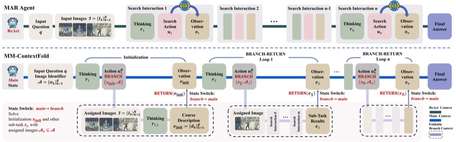

MM-ContextFold: Context Folding for Multimodal Agentic Retrieval
Abstract
Multimodal Agentic Retrieval (MAR) requires agents to iteratively invoke search tools over multimodal inputs across extended tool-use trajectories. Prevailing frameworks such as ReAct append raw input images and full interaction histories to a single ever-growing context, causing context saturation. Through a systematic empirical study over ~10,000 retrieval trajectories, we find that the agent's reliance on raw images progressively diminishes as visual cues are textualized into the evolving context, while continued image retention brings redundant visual context and neutral or worse accuracy. Motivated by these findings, we propose MM-ContextFold, a training-free dual-state framework that decouples visual grounding from the main reasoning trajectory: a persistent text-only main context handles high-level planning, while ephemeral branch contexts load only the designated raw images for scoped visual grounding; each branch folds its findings back into the main context as a textual summary, after which the raw images are discarded. Across seven MAR benchmarks and five backbones, MM-ContextFold improves average accuracy by 6.3% over ReAct while reducing working context length by 27.5%.